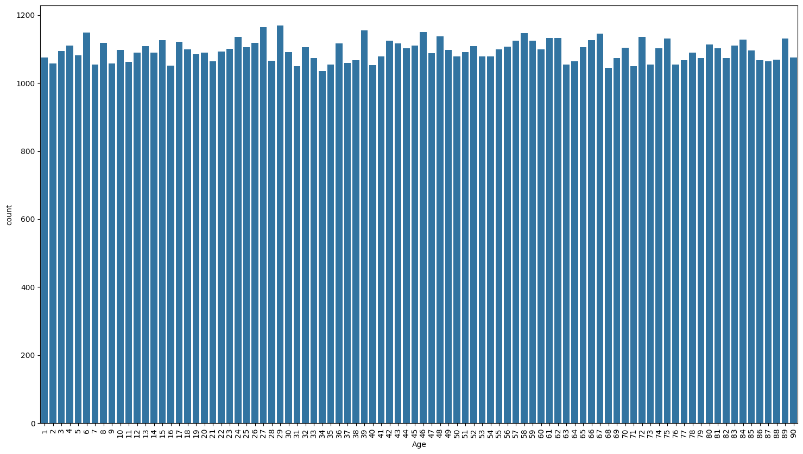

This count plot displays the frequency distribution of passengers across all age values in the dataset. Created using Seaborn's countplot function with a large figure size (18x10 inches), the visualization shows individual ages on the x-axis and the count of passengers for each age on the y-axis. The x-axis labels are rotated 90 degrees for better readability when dealing with numerous age categories. This detailed visualization provides a granular view of age distribution, making it easy to identify the most common passenger ages, detect age patterns, and spot any anomalies or outliers in the data. Unlike the histogram which groups ages into bins, this chart shows the exact count for each specific age value.